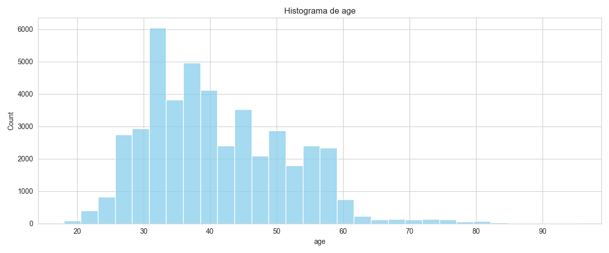
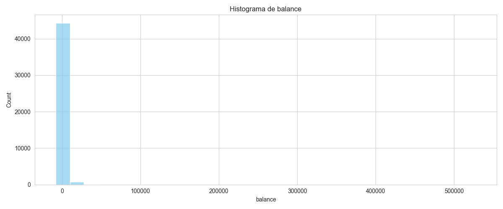
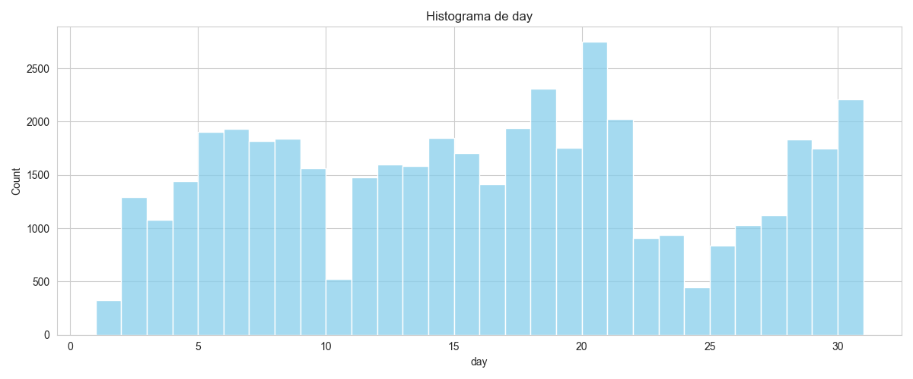
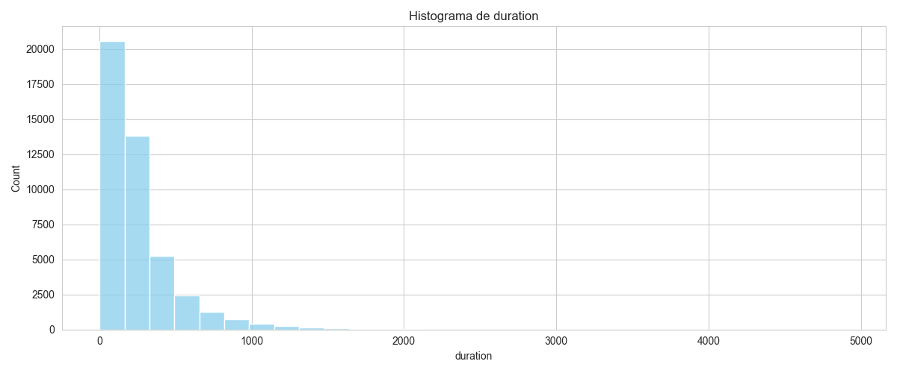
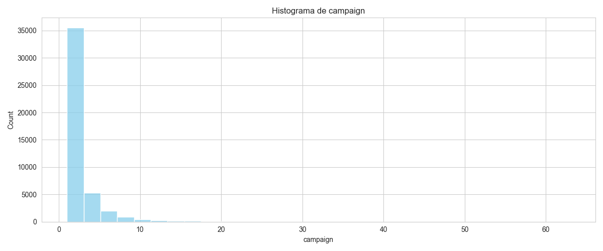
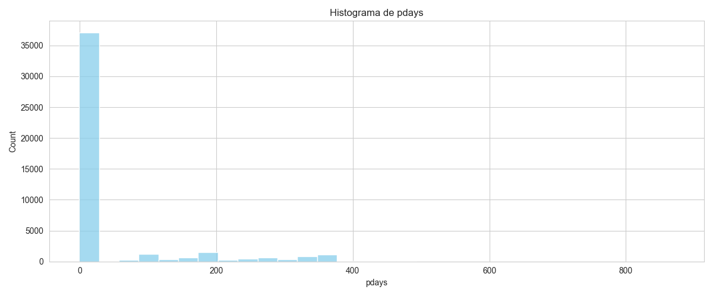
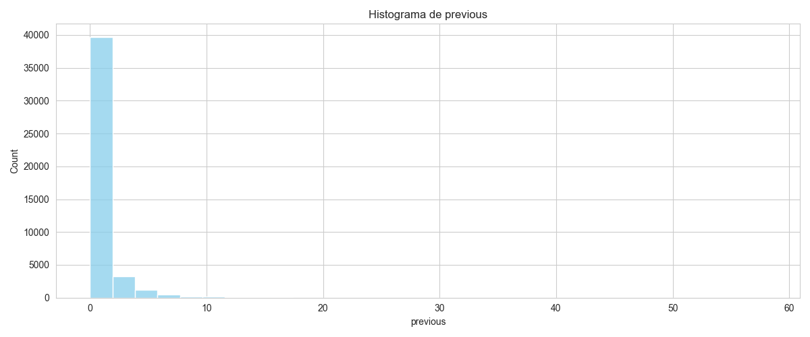
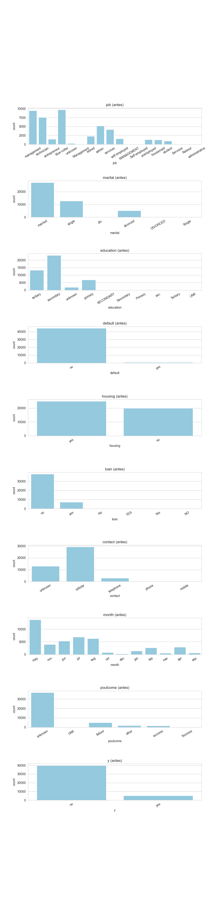
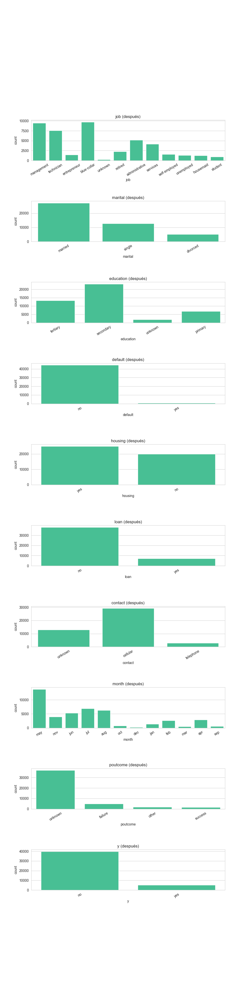

Proyecto realizado con Python y Pandas
El objetivo de este proyecto fue realizar un proceso completo de limpieza y validación de datos utilizando la librería Pandas en Python. Se trabajó sobre un dataset bancario aplicando técnicas de depuración, eliminación de valores incorrectos y validación de información.
Se eliminaron registros con edades mayores a 100 años, valores negativos o iguales a cero en la duración, y datos atípicos en la columna previous.
Se generaron histogramas para analizar la distribución de cada variable numérica y detectar posibles valores extremos.







Se normalizaron los valores categóricos convirtiendo el texto a minúsculas y unificando abreviaciones o inconsistencias en los subniveles.


Finalmente, se obtuvo un dataset limpio, organizado y preparado para futuros análisis o modelos de ciencia de datos. El archivo fue exportado como: